あしらい 4つの案（11/08）
4つとも入れたページ：案をページで見る（いまのページと見比べられます）。一つずつ選べます。
済：一番下で落ちてくるがらくたを C2 に（本番に反映）
細い紺の線＋二色の粒子を少しずらして重ねる描き方にそろえました。
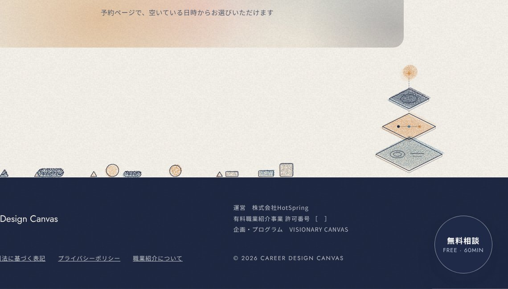
4. アプローチの場面の絵を C2 に
塗りの形に二色の粒子を少しずらして重ね、輪郭を細い紺の線に。図解と同じ手ざわりに（下は拡大）
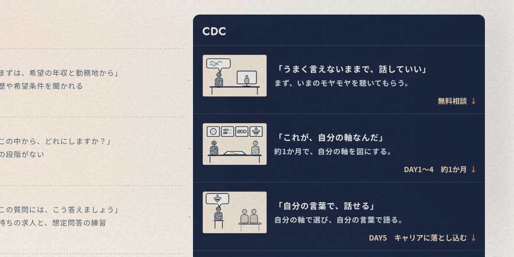
2. チップ（60分・オンライン…）
細い枠をやめ、淡いベージュの地に小さなオレンジの点
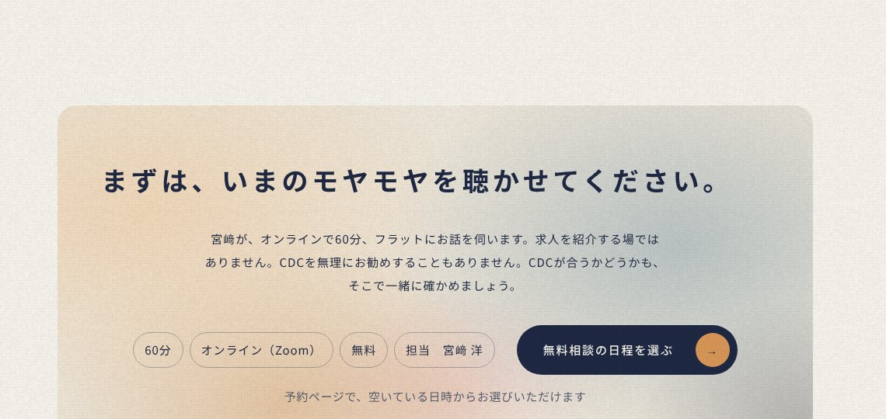
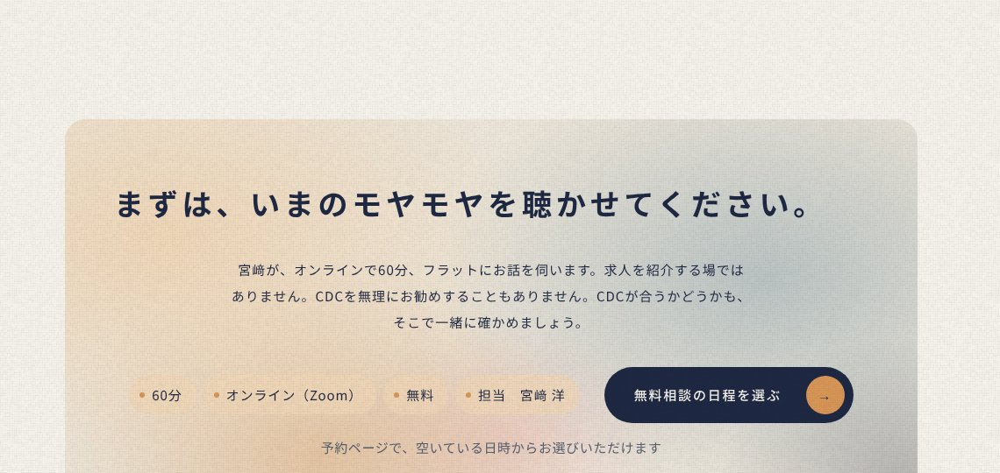
1. 区切り線（よくある質問の例）
細い灰色の実線を、図の補助線と同じ霧の点線に。CDCの特徴・アプローチ・比べる表・Program も同じ
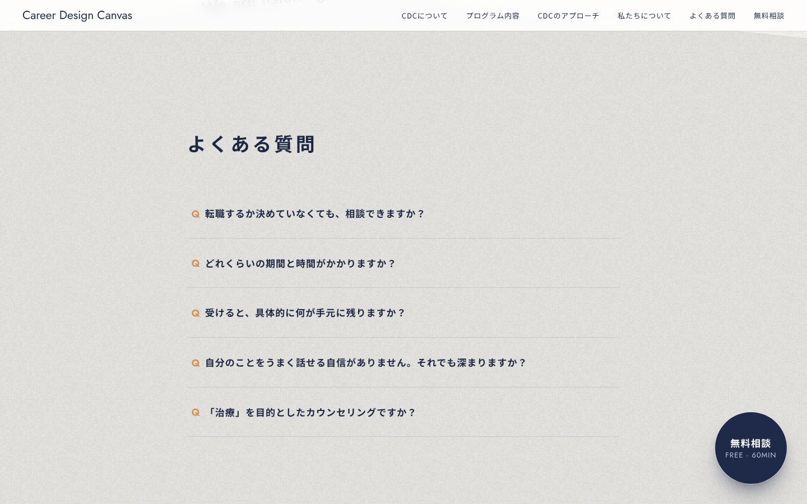
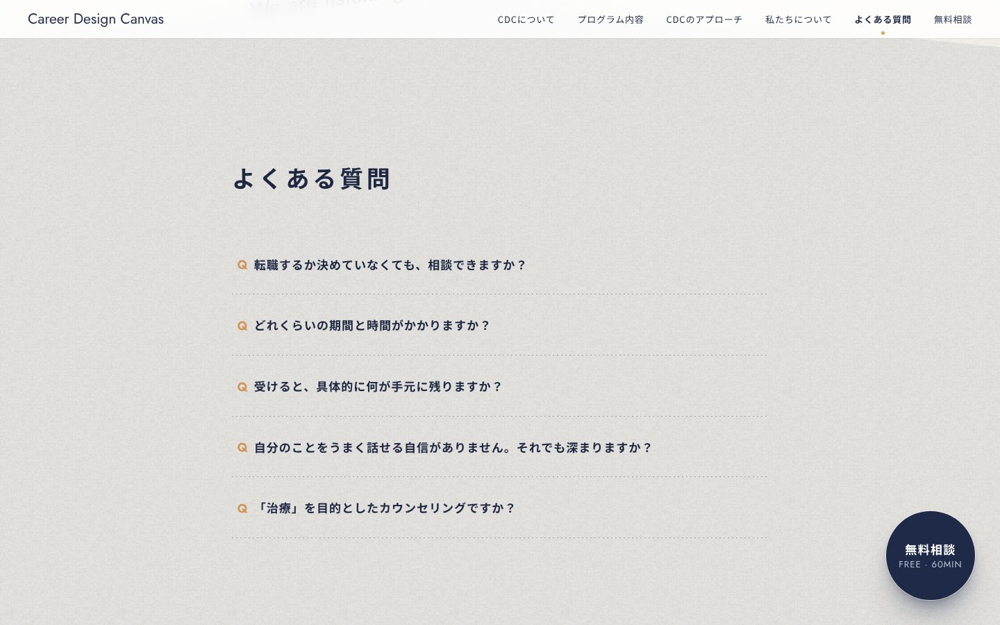
1. 区切り線（CDCの特徴の例）
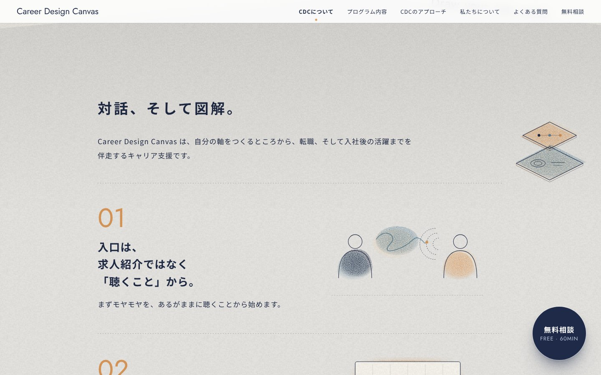
1. 区切り線（転職エージェントと、ここが違う の例）
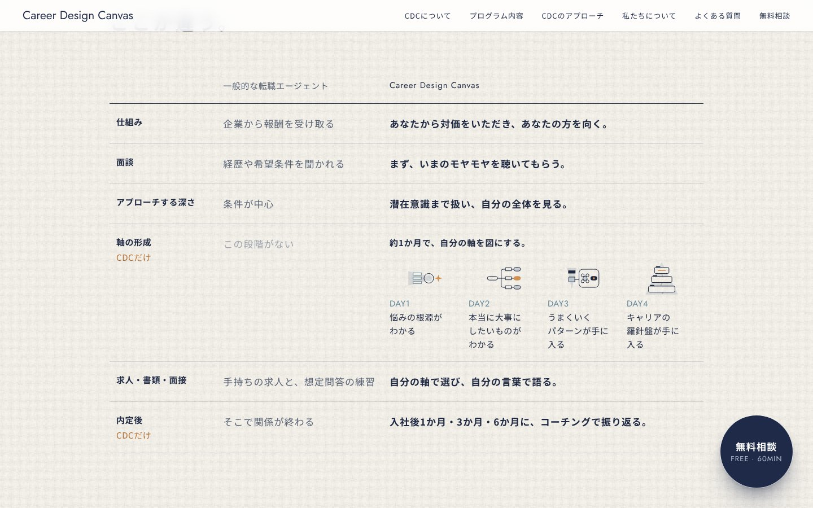
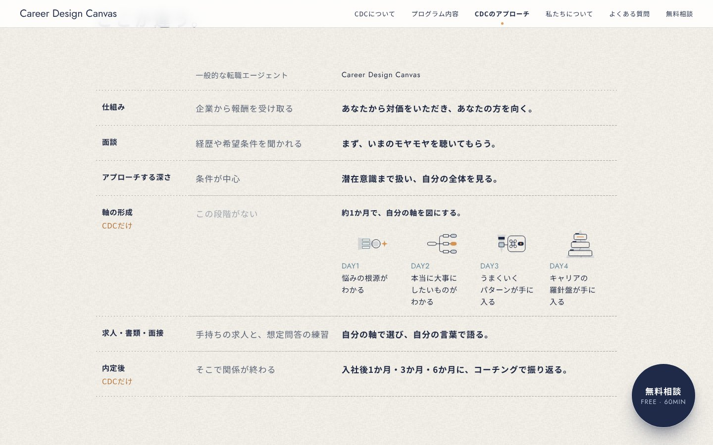
3. メニュー
いまいる章を太字にし、下に小さなオレンジの点
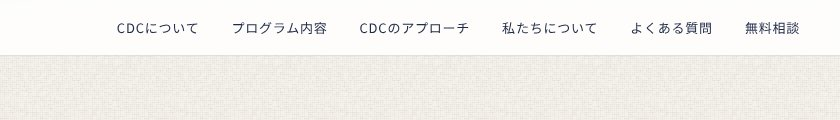
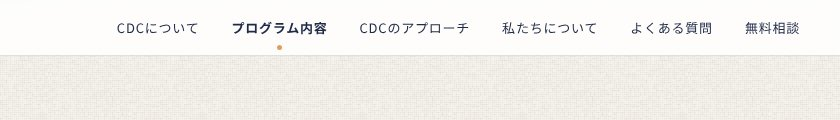